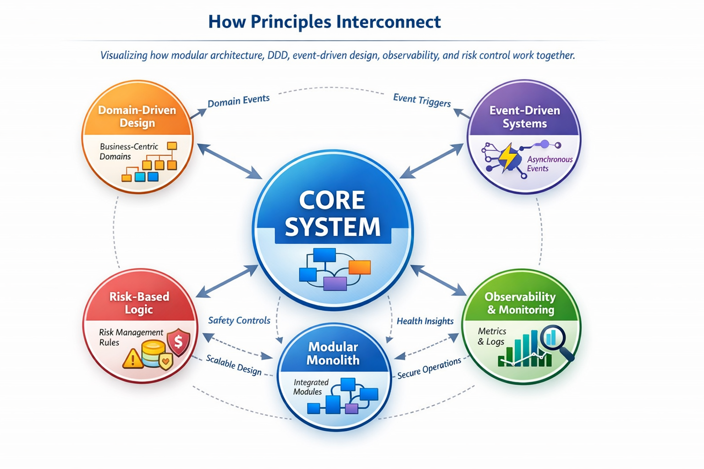

I design systems with modular architecture, observability, risk control, and scalability as core principles. My approach ensures maintainable, resilient, and high-performing systems.
Organizing systems around business domains to reduce complexity and align code with real-world processes.
Example: In Hoops Track Kenya, features like Teams, Fixtures, and Player Profiles are structured as separate domain modules.
Building responsive systems where components communicate through events, enabling decoupled and asynchronous workflows.
Example: TBotOne triggers trade alerts when key price levels are hit, without blocking other processes.
Maintaining a single deployable application while keeping modules independent, testable, and scalable.
Example: Hoops Track Kenya separates stats, chat, and team management into distinct modules with shared core services.
Tracking system health with metrics, logging, and dashboards for performance insights and proactive debugging.
Example: TBotOne integrates Grafana/Prometheus for metrics and Sentry for error tracking.
Designing systems to account for operational and financial risk, ensuring safe and controlled operations.
Example: Position sizing and stop-loss logic in TBotOne limits exposure to a maximum of 2% risk per trade.
Visualize how modular architecture, DDD, event-driven design, observability, and risk control work together.
